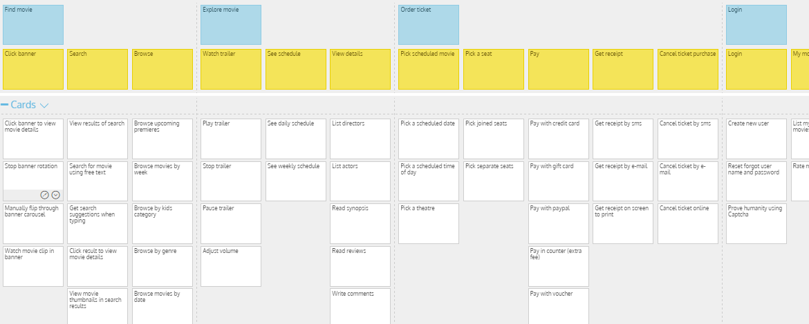

{{> header}}

<div class="article-wrapper">

    <h5 class="method">Method</h5>

    <h1>User story mapping</h1>

    <h2>User stories give us roles, goals and reasons. Stories dictate the need for content and functionality.</h2>

    <div class="article-image">
        <div class="article-image-element">
            
              <div class="article-image-overlay">
                <!--  <h2><span class="highlight">A user story map for a cinema ticket ordering product</span></h2>-->
              </div>
        </div>
    </div>


    <div class="article-text">

        <p>User stories provide the very foundation for a digital product. They come in various sizes. Large stories are called 'Epics',
          Medium stories are called 'Features', and Small stories are simply called 'User Stories'. Epics and features are typically containers to provide
          meaningful structure, while the User stories themselves are the actual functionality we want to build.


        </br></br>Defining a user story map is often done together with a client, actual end users and key stakeholders. It must be based on <a href="user-research.html">research</a> done on
        actual target users. User stories are organized into groups which provide a feature, and features belong to a certain Epic. A user story ideally
        has a very concrete and simple function "As who I can what so that why". In the example of a ticket system, a story can be "As a moviebuff I can read a review
        so that I can find out whether or not some people appreciated a movie".
      </p>

    </div>

</div>

{{> footer}}
